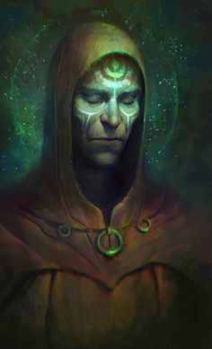
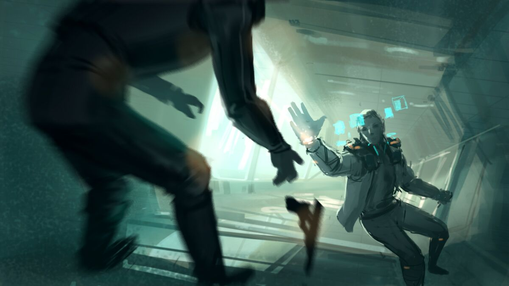
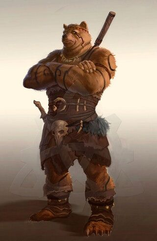

blah blah blah.
Physiology.
Society.
The planet Earth is a recent addition to the galactic stage, but they’re making a splash in the Seven Wastes sector as adventurers and travelers. The diaspora of Terrans is no longer being forced by the Hegemony, and yet it continues as strong as before since the liberation of Earth. Terrans are a hearty people, possessed of a desire to learn and a willingness to make do that other species lack. Even separated from their homeworld, they share enough cultural identity to make a name for themselves.
Grovers are a race of humans from a planet deep within the Philosopher Kingdom. They are caretakers of the Sphinx’s wishes, a client race of the demigods who know everything. Not all Grovers choose to serve the Sphinx, though – there are millions who travel live independent lives. Yet even these free Grovers hold the Sphinx in high regard, for their world’s place in the universe is at the feet of the Philosopher Kings.
Slightly green in hue as humans go, Grovers usually have brown, black, or auburn, with eyes that are always a deep jade. Their blood contains far more oxygen than most Human blood, making them ideal donors.
Grovers are experts in information, possessed by a conversational style that always draws out more than they reveal. While tests of individual Grovers reveal no unusual psionic energy, large groups of Grovers do generate ripples against psychic backdrops. Whether their inability to be read, and their innate ability to read patterns in both faces and texts, is magic in nature or mundane, Grovers are well regarded as investigators and brokers.
Many humans grow up so far removed from any other culture that their culture becomes that of the wandering byways of space. Spacers are humans who have been away from a homeworld for so long that they have no real knowledge of where their ancestors came from, but instead are part of an amalgam of human races who share a culture of living on stations and starships and the lost realms between the stars.
Strong in body and hale in spirit, Vrar are vanguards of a cause. If you are allied with that cause, they will guard your flank until they fall. Oppose them, and they are an unstoppable force. Most commonly associated with the Federation, the Vrar are found everywhere in the universe.
Physiology. Vrars are big bears. Ursine creatures who walk upright, with claws capable of fine manipulation and feet capable of supporting them as they run or climb. They are omnivores, who tend to sleep for long stretches (about 12 of the 30 hours of their homeworld’s day). Their thick hide often protects them from the cold, though they can handle hot climates well enough.
Society. The Vrar are very focused on service and their community. They are champions of great causes, and protectors of those they call kith and kin. Vrar society is one of clans and fraternities. Every organization is named, and Vrar have an intuitive understanding of its membership. Vrar do not traditionally aspire to power over others, but rather membership in the most respected groups and the success of causes they believe in.
Naming Conventions.
Generate Name: